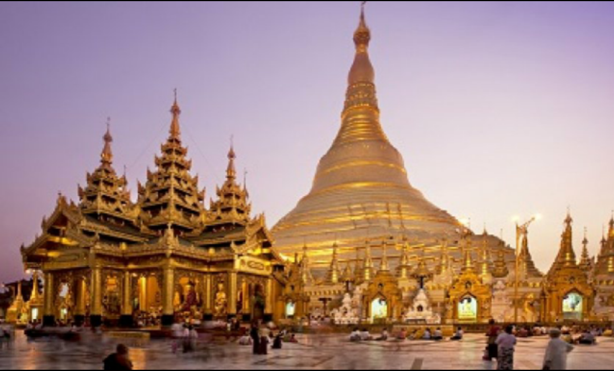
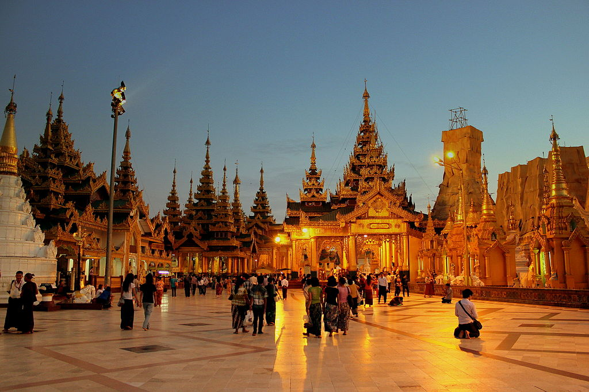
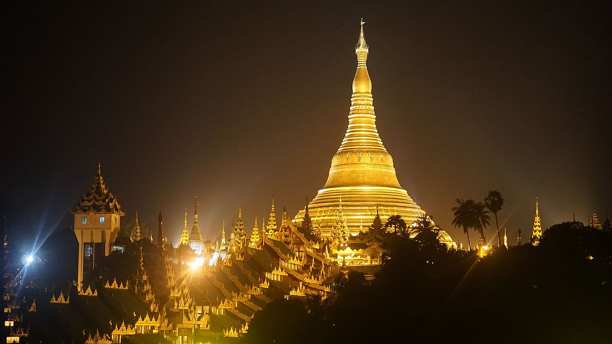
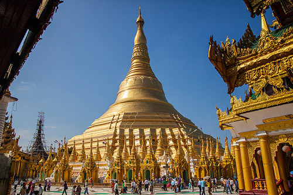
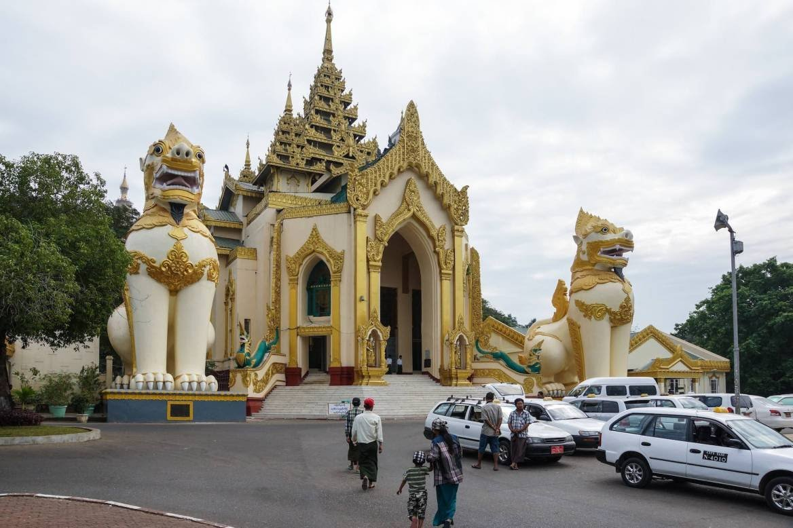
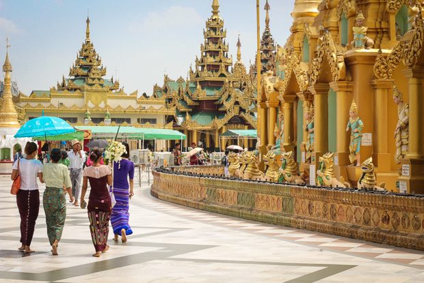
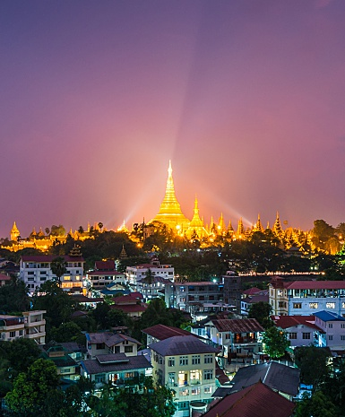

Shwedagon Pagoda

Shwedagon Pagoda is the most sacred Buddhist pagoda in Myanmar, as it is believed to contain relics of the four previous Buddhasof the present kalpa. These relics include the staff of Kakusandha, the water filter of Ko?agamana, a piece of the robe of Kassapa, and eight strands of hair from the head of Gautama. Historians and archaeologists maintain that the pagoda was built by the Mon peoplebetween the 6th and 10th centuries AD. However, according to legend, the Shwedagon Pagoda was constructed more than 2,600 years ago, which would make it the oldest Buddhist stupa in the world. According to tradition, Taphussa and Bhallika — two merchant brothers from the north of Singuttara Hill what is currently Yangon met the Lord Gautama Buddha during his lifetime and received eight of the Buddha's hairs. The brothers returned to Burma and, with the help of the local ruler, King Okkalapa, found Singuttara Hill, where relics of other Buddhas preceding Gautama Buddha had been enshrined.[citation needed] When the king opened the golden casket in which the brothers had carried the hairs, incredible things happened:


The stupa fell into disrepair until the 14th century, when King Binnya U (1323–1384) rebuilt it to a height of 18 m (59 ft). A century later, Queen Binnya Thau (1453–1472) raised its height to 40 m (131 ft).
A series of earthquakes during the following centuries caused damage. The worst damage was caused by a 1768 earthquake that brought down the top of the stupa, but King Hsinbyushin later raised it to its current height of 99 m (325 ft). A new crown umbrella was donated by King Mindon Min in 1871 after the annexation of Lower Burma by the British. An earthquake of moderate
intensity in October 1970 put the shaft of the crown umbrella visibly out of alignment. A scaffold was erected and extensive repairs were made. From 22 February 2012 to 7 March 2012, devotees celebrated the annual Shwedagon Pagoda Festival for the first time since 1988, when it was banned by the governing State Law and Order Restoration Council. Celebrations began at the Rahu corner of the pagoda's yinbyin platform, at the Maha Pahtan and Aung Myay central platforms, at 9 am. on 22 February. The Shwedagon Pagoda Festival, which is the largest pagoda festivalin the country, begins during the new moon of the month of Tabaung in the traditional Burmese calendar and continues until the full moon.
The pagoda is listed on the Yangon City Heritage List. The stupa's plinth is made of bricks covered with gold plates. Above the base are terraces that only monks and other males can access.



Next is the bell-shaped part of the stupa. Above that is the turban, then the inverted almsbowl, inverted and upright lotus petals, the banana bud and then the umbrella crown. The crown is tipped with 5,448 diamonds and 2,317 rubies. Immediately before the diamond bud is a flag-shaped vane. The very top—the diamond bud—is tipped with a 76 carat (15 g) diamond.[citation needed]
The gold seen on the stupa is made of genuine gold plates, covering the brick structure and attached by traditional rivets.[citation needed] People all over the country, as well as monarchs in its history, have donated gold to the pagoda to maintain it. The practice continues to this day after being started in the 15th century by the Queen Shin Sawbu (Binnya Thau), who gave her weight in gold.
There are four entrances, each leading up a flight of steps to the platform on Singuttara Hill. A pair of giant leogryphs guards each entrance. The eastern and southern approaches have vendors selling books, good luck charms, images of the Buddha, candles, gold leaf, incense sticks, prayer flags, streamers, miniature umbrellas and flowers.
It is customary to circumnavigate Buddhist stupas in a clockwise direction. In accordance with this principle, one may begin at the eastern directional shrine, which houses a statue of Kakusandha, the first Buddha of the present kalpa. Next, at the southern directional shrine, is a statue of the second Buddha, Ko?agamana. Next, at the western directional shrine, is that of the third Buddha, Kassapa. Finally, at the northern directional shrine, is that of the fourth Buddha, Gautama.


Most Burmese people are TheravadaBuddhists, and many also follow practices which originated in Hindu astrology. Burmese astrology recognizes the seven planets of astrology — the Sun, Moon, Mercury, Venus, Mars, Jupiter, and Saturn. In addition, it recognizes two other planets, Rahu and Ketu. All the Burmese names of the planets are borrowed from Hindu astrology, but the Burmese Rahu and Ketu are different from the Hindu Rahu and Ketu. The Burmese consider them to be distinct and separate planets, whereas Hindu astrology considers them to be either the Dragon's Head and Tails, or Ascending and Descending Nodes. To the Burmese people, Ketu is the king of all planets. As in many other languages, the Burmese name the seven days of their week after the seven planets, but Burmese astrology recognizes an eight-day week, with Wednesday being divided into two days; until 6 p.m. it is Wednesday, but after 6.pm. until midnight it is Rahu's day.
It is important for Burmese Buddhists to know on which day of the week they were born, as this determines their planetary post. There are eight planetary posts, as Wednesday is split in two (a.m. and p.m.). They are marked by animals that represent the day — garuda for Sunday, tiger for Monday, lion for Tuesday, tusked elephant for Wednesday morning, tuskless elephant for Wednesday afternoon, mouse for Thursday, guinea pig for Friday and naga for Saturday. Each planetary post has a Buddha image and devotees offer flowers and prayer flags and pour water on the image with a prayer and a wish. At the base of the post behind the image is a guardian angel, and underneath the image is the animal representing that particular day. The plinth of the stupa is octagonal and also surrounded by eight small shrines (one for each planetary post). It is customary to circumnavigate Buddhist stupas in a clockwise direction.
The pilgrim, on his way up the steps of the pagoda, buys flowers, candles, coloured flags and streamers. These are to be placed at the stupa in a symbolic act of giving, which is an important aspect of Buddhist teaching. There are donation boxes located in various places around the pagoda to receive voluntary offerings which may be given to the pagoda for general purposes. As of December 2017 foreigners are charged a 10,000 Kyats(approx. 7 USD) entrance fee.
 Facebook:
Facebook:  Email:
Email:  Browser:
Browser:  Phone:
Phone:  Address:
Address: